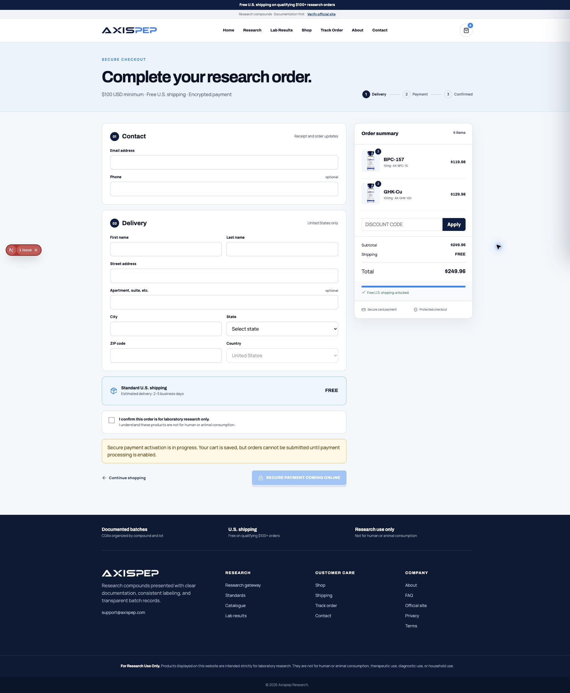

Guide
Complete checkout
Confirm your contact, delivery, and research-use details before protected payment.
1. Confirm the order summary
Check each item, strength, quantity, subtotal, and shipping status in the summary. Use Continue shopping if anything needs to change.

2. Enter contact and delivery details
Enter a valid email address and U.S. delivery address. A phone number and second address line are optional.
3. Confirm research use
Select the checkbox confirming that the order is for laboratory research only. This confirmation is required.
4. Continue to protected payment
When secure payment is active, select Continue to secure payment and finish on the protected payment screen. If activation is still in progress, the button remains safely disabled and your cart stays saved.